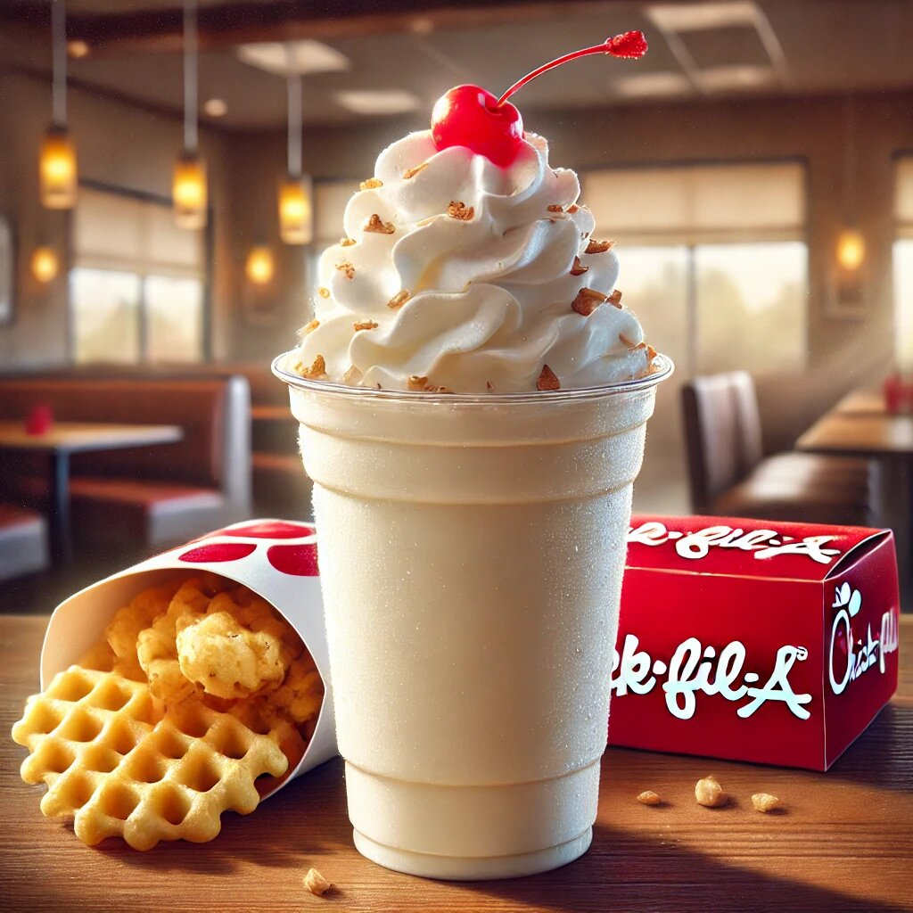

Chick-fil-A Vanilla Milkshake: A Sweet Treat Worth the Hype
When it comes to fast food, Chick-fil-A is a name that needs no introduction. Known for their crispy chicken sandwiches, waffle fries, and unparalleled customer service, they’ve also carved a special spot in the hearts of milkshake lovers. One particular standout is the Chick fil-a Vanilla Milkshake, a classic dessert option that has fans raving. At a price of just $4.85, it promises to deliver a satisfying burst of sweetness that’s worth every penny. Let's dive into what makes this milkshake such a hit among dessert enthusiasts.
The Creamy Goodness of Vanilla
There’s something about a vanilla milkshake that feels timeless, isn’t there? It’s a flavor that doesn't shout for attention but rather wins hearts with its understated elegance. Chick-fil-A’s Vanilla Milkshake is no exception. It's creamy, rich, and perfectly sweetened to deliver that nostalgic vanilla taste we all know and love.
Each sip offers a velvety texture that glides over your taste buds like a warm hug (okay, a cold hug, but you get the idea). Chick-fil-A takes their vanilla milkshake seriously, using high-quality ice cream and real vanilla extract to ensure a flavor profile that’s both authentic and indulgent.
A Closer Look at the Price
Let’s be honest, $4.85 might not be pocket change for a fast-food dessert, but hear me out—it’s worth it. The quality you’re getting for this price is top-notch. This isn’t some watered-down milkshake with a hint of vanilla. It’s the real deal. Chick-fil-A could easily charge more and get away with it, but at this price point, you’re getting a dessert that feels like it belongs in a fancy diner rather than a drive-thru window.
One Size Fits All
Currently, Chick-fil-A does not offer different sizes for their Vanilla Milkshake. That means whether you’re a casual sipper or someone who downs milkshakes like a competitive eater, you’re getting the same amount. Some might see this as a downside, but let’s look on the bright side: no more agonizing over small, medium, or large. You order, and bam—you’ve got the perfect serving size in hand.
And hey, there’s a hidden benefit here. If you’re ever accused of having "eyes bigger than your stomach," you can confidently say, “It’s the only size they offer!” Problem solved.
Toppings That Steal the Show
What’s a milkshake without its toppings? Chick-fil-A understands the importance of presentation and flavor, which is why each Vanilla Milkshake comes crowned with a generous dollop of whipped cream and a cherry on top.
The whipped cream adds an extra layer of creaminess, while the cherry brings a little pop of color (and flavor) to the mix. It’s a small touch, but it makes the experience feel just a tad more special—like you’re indulging in a treat made just for you.
Perfect Pairings
The Chick-fil-A Vanilla Milkshake is delightful on its own, but why stop there? Pair it with their famous waffle fries for that sweet-and-salty combination we all secretly crave. Feeling adventurous? Try dipping the fries into the milkshake!
Feeling adventurous? Try dipping the fries into the milkshake. Yes, it sounds strange, but trust me, it’s a culinary masterpiece. The warm, salty fries paired with the cold, sweet vanilla shake will leave your taste buds doing a happy dance.
When and Where to Enjoy It
The beauty of the Chick-fil-A Vanilla Milkshake is its versatility. It’s the kind of treat you can enjoy anytime, anywhere. Need a mid-afternoon pick-me-up? Vanilla Milkshake. Celebrating a small victory? Vanilla Milkshake.
And let’s not forget about road trips. A Chick-fil-A Vanilla Milkshake is practically a co-pilot in dessert form. It keeps you company, doesn’t judge your singing, and is always there to lift your spirits.
A Milkshake for All Ages
Whether you’re 5 or 85, the Chick-fil-A Vanilla Milkshake is a treat that transcends age. It’s also a great option for sharing—if you’re feeling generous.
It’s also a great option for sharing—if you’re feeling generous. But let’s be real, you’re probably not going to want to share this one.
Customer Love: What People Are Saying
A quick scroll through social media will show you just how much people adore this milkshake. “The best vanilla milkshake ever!” one user gushes. “Chick-fil-A has perfected the art of simplicity with their Vanilla Milkshake,” says another.
It’s not just about the taste, though. Many fans appreciate the consistency—every time they order a Vanilla Milkshake, it’s just as good as they remembered. That kind of reliability is rare in the fast-food world, and it’s one of the reasons Chick-fil-A has such a loyal following.
Health? Let’s Not Go There
Alright, let’s address the elephant in the room. Milkshakes aren’t exactly health food. But here’s the thing—life is all about balance. A little indulgence now and then? Totally allowed.
If you’re counting calories, maybe split it with a friend or save it for a special occasion. But honestly, sometimes you’ve just got to live a little.
Final Thoughts
The Chick-fil-A Vanilla Milkshake is a testament to the idea that simple things, done well, can be truly extraordinary. At $4.85, it’s an affordable indulgence that feels luxurious. Life’s too short not to enjoy a little vanilla magic.
At $4.85, it’s an affordable indulgence that feels luxurious. Whether you’re a first-time milkshake drinker (welcome to the club!) or a seasoned pro, this is one treat that deserves a spot on your must-try list.
So next time you’re at Chick-fil-A, don’t overthink it. Order the Vanilla Milkshake, grab a straw, and savor the creamy, dreamy goodness. Life’s too short not to enjoy a little vanilla magic.